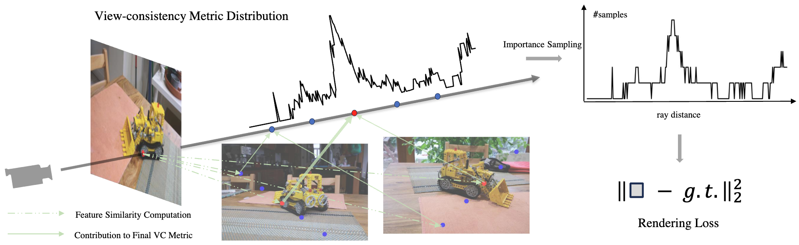
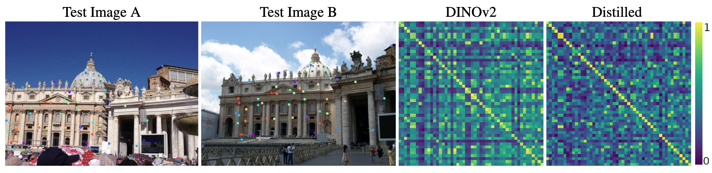
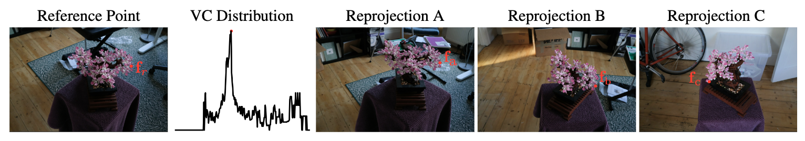
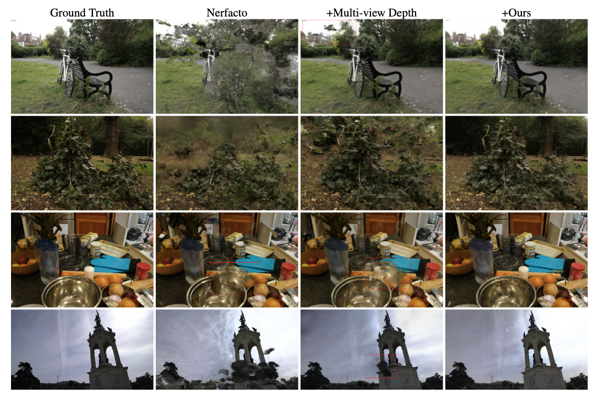
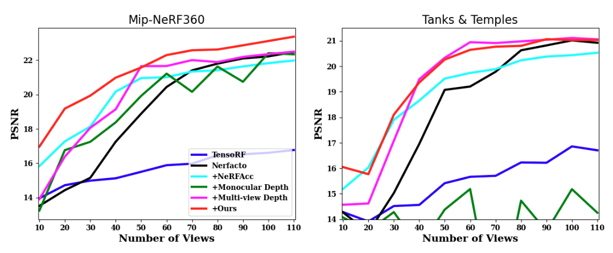

Our central idea is to pre-compute a view-consistency distribution along rays and to perform importance sampling according to this distribution. As a result, the sampling will concentrate around surface points instead of random points in the capture volume.

We distill the foundation model DINOv2 for geometric information by tuning our projection network on real images from MegaDepth dataset.
Following is the visualization of the feature distillation process. For the two test images from Megadepth dataset, we first randomly generate $50$ ground truth correspondences (same as in the training process), shown as colored dots, and then extract vanilla DINOv2 features (384 dimension) and the proposed distilled DINOv2 features (32 dimension) at these locations. We compute the feature similarities across the two views and show the resulting similarity matrices on the right, where an optimal correspondence should give the identity matrix.

We also visualize the effectiveness of the view-consistency metric on the Bonsai scene from the MipNeRF360 dataset. As shown, we shoot a ray from the reference point in the leftmost image, compute the view-consistency metric distribution along the ray, and reproject the peak point in the distribution onto other views. The projections of the peak are consistent and correspond to a surface point.

We show comparisons of VS-NeRF to the main competitors and the corresponding ground truth images from held-out test views. The scenes are, from the top down: Bicycle with 60 training views, Stump with 110 training views, Counter with 70 training views from the Mip-NeRF360 dataset and Francis with 70 training views from Tanks&Temples. The '+' prefix indicates the included additional component to Nerfacto.

We also show performances of VS-NeRF and competitors with increasing number of views over Mip-NeRF360 dataset and Tanks&Temples, in terms of PSNR values. The '+' prefix indicates the included additional component to Nerfacto.

@inproceedings{fan2025vcs,
title={A View-consistent Sampling Method for Regularized Training of Neural Radiance Fields},
author={Fan, Aoxiang and Dumery, Corentin and Talabot, Nicolas and Fua, Pascal},
booktitle={International Conference on Computer Vision (ICCV)},
year={2025}
}